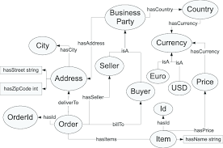

This diagram represents the structure of a reference ontology. It shows how different concepts within a domain are connected through relationships.
A reference ontology defines core concepts and their relationships so that different systems and researchers can share and understand information in the same structured way.
For example, an ontology might define relationships such as “part of”, “type of”, or “related to” between different entities in a knowledge system.